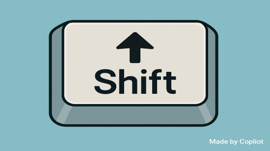

[셈틀과 글쇠] 시프트(Shift) 키 1 – 컴퓨터 키보드 자판 중 ‘약방에 감초’ 같은 존재

1. 작성경위
다음은 한국시각장애인연합회에서 발행하는 월간 손으로 보는 세상 제908호(2023. 2. 10.)에 객원기자로 활동하면서 기고한 글입니다.
2. 세부내용
2.1. 들어가는 말
‘슥삭슥삭’, ‘삽살하다’ 이 두 어절은 PC키보드에 시프트 키를 사용하지 않고 써 본 경우다. 왠지 한글이 가진 의성어로서 풍부함과 형용사로서 표현력이 부족한 느낌이다. 그럼 시프트 키를 사용하면? ‘쓱싹쓱싹’, ‘쌉쌀하다’ 이제야 제대로 ‘쓱싹쓱싹’ 청소한 기분이 들고, 커피 한잔의 ‘쌉쌀함’이 느껴진다. 시프트 키의 중요성이 느껴지는 순간이다.
시프트 키는 컨트롤(Ctrl) 및 알트(Alt) 키처럼 단독으로는 문자가 생성되거나 커서 위치가 이동하지 않는다. 그런데 시프트 키를 누른 상태에서 문자 키를 누르면 ㄲ, ㄸ, ㅃ, ㅆ, ㅉ과 같은 된소리나 ㅒ, ㅖ와 같은 이중모음, 그리고 영어 소문자 대신 대문자를 사용할 수 있다. 이 밖에도 일부 키와 함께 배정된 대체문자를 전환하여 표시 할 수 있게 해주는 기능이 있는데, 예를 들면 키보드의 맨 위 행에 있는 숫자 키 1, 2, 3, 4에는 각각 !, @, #, $ 같은 대체 값이 있어 시프트 키를 누른 상태에서 이런 특수문자를 사용 할 수 있게 된다.
아주 작은 키보드를 가지고 있는 노트북이 아니라면 대부분의 키보드에는 두 개의 시프트 키가 있는데, 문자 키의 맨 아래 행의 왼쪽과 오른쪽 끝에 컨트롤 키 위에 위치해 있고, 문자키보다 넓어 누른 상태에서 손가락을 멀리 뻗을 수 있다.
시프트키가 두 개인 이유는, 열 손가락을 모두 사용하여 능숙하게 입력하는 사람이 왼손으로 입력하는 문자에는 오른쪽 시프트 키를 사용하고 오른손으로 입력하는 문자에는 왼쪽 시프트 키를 사용하게 함으로써 효율성을 높이는데 있다.
2.2. PC보다 훨씬 이전 호랑이 담배피던 시절부터 있었던 시프트 키
시프트 키의 기원을 찾다보면 기계식 타자기의 시대로 거슬러 올라간다. 기계식 타자기에서 시프트 키를 누르면 롤러와 용지를 고정하는 캐리지가 0.5인치 정도 위쪽으로 이동하게 되고, 소문자 해머 대신 대문자 해머가 리본에 닿게 돼 영문 대소문자 입력이 가능해 지는 것이다.
시프트 키의 기원이 기계식 타자기였다는 사실은 PC 키보드의 캡스락(Caps Lock) 키의 기능을 보면 알 수 있는데, PC에서 캡스락 키가 눌러진 상태에서는 시프트 키를 누르지 않고도 영문자판을 대문자로 입력할 수 있다. 타자기에서도 시프트락(Shift Lock) 키가 있었는데, 이 키를 한 번 누르면 다시 눌러 기능을 해제 할 때까지 시프트 키를 누르고 있는 상태, 즉 Lock한 상태가 돼 연속으로 대문자를 입력할 수 있었던 것이다.
결과적으로 PC 키보드의 캡스락(Caps Lock) 기능은 레버를 통해 기계적으로 시프트 키를 잠글 수 있는 오래된 타자기의 시프트락(Shift Lock) 에서 유래했다는 것을 알 수 있다.
다음 시간에는 윈도우10 운영체제 환경에서 시프트 키를 조합한 단축키 기능에 대해서 알아보고자 한다.
참고로 국내용 타자기에서는 한글 자모 특성상 대소문자 구분은 필요 없었고, 초성․중성․종성의 구조를 표현하기 위해 ‘시프트’ 대신 ‘받침’이라는 기능으로 변경되어 사용되었습니다.